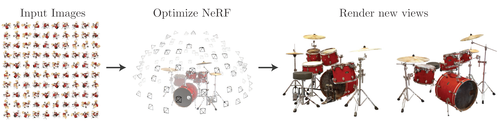
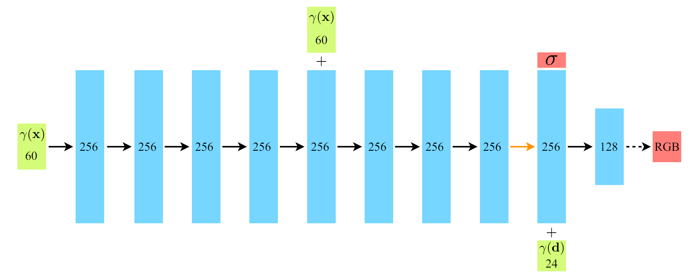
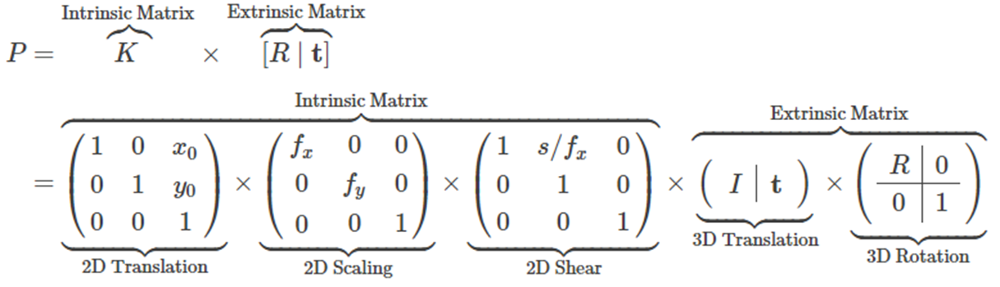
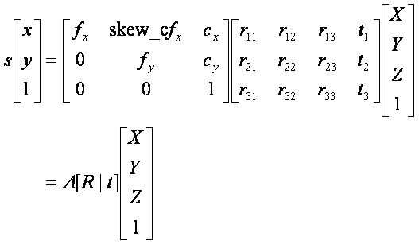
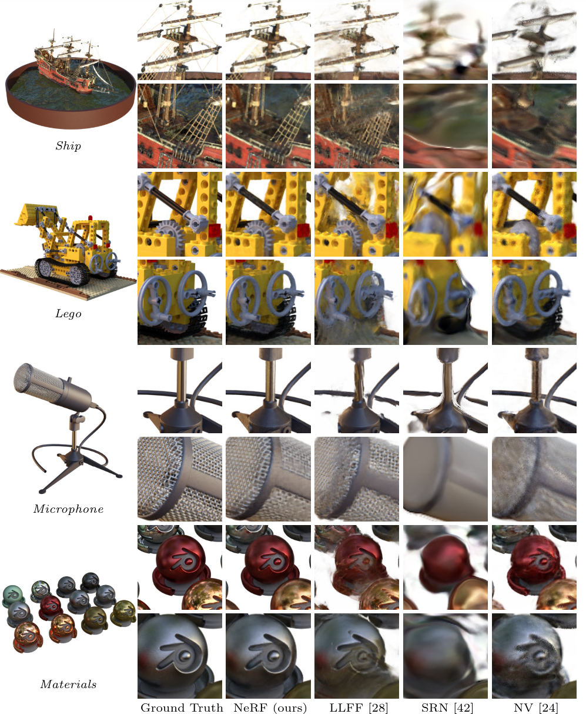

Information
Title: NeRF: Representing Scenes as Neural Radiance Fields for View Synthesis
Reference
Project: bmild/nerf
Author: Jeongin Lee
Last updated on May. 22, 2024
NeRF : Representing Scenes as Neural Radiance Fields for View Synthesis#

기존의 3D object 자체를 구성하여 렌더링하는 explicit method → 저장 용량이 많이 소요
NeRF 는 3D object 자체를 구성하지 않는, synthesizing novel views 좌표를 mlp에 넣어 픽셀 별 색상 및 밀도 값을 얻는 implicit method
synthesizing novel views
특정한 장면(Scene)에서 여러 각도로 찍은 일부의 사진들을 가지고 완전 새로운 각도의 모습을 유추하는 task
0. Abstract#
NeRF
한정된 수의 입력 뷰 이미지들을 사용
continous volumetric scene 함수 최적화를 통해 synthesizing novel views 에서 SOTA 달성
Algorithm
FC layer 사용 (non-convolutional)
input : 5 차원 좌표 (공간적 위치\((x, y, z)\) & 바라보는 방향\((\theta, \phi))\)
output : volume density와 해당 방향에 대한 색상 값
5 차원 좌표 입력 → 카메라 광선을 따라 RGB 값, Volume density 예측 → 고전적 Volume rendering 기술을 사용하여 image 로 합성
복잡한 구조 및 외형을 갖는 scene 에 대한 Novel views rendering 을 위해 NeRF 를 최적화하는 방법을 제시 (+ Positional Encoding, Hierarchical volume sampling)
실험을 통해 기존 작업을 능가하는 결과를 입증
Keywords : scene representation, view synthesis, image-based rendering, volume rendering, 3D deep learning
 Fig. 587 method that optimizes a continuous 5D neural radiance field representation \ (source: {https://arxiv.org/pdf/2003.08934v2})#
{kind=link}
1. Introduction#
캡처된 이미지들의 렌더링 오차를 최소화하기 위해 연속적인 \(5 \mathrm{D}\) scene 함수의 파라미터를 직접 최적화하여 View synthesis 분야의 오랜 문제를 새로운 방식으로 해결함
정적 장면 → 연속적인 \(5 \mathrm{D}\) 함수로 표현
FC layer = Regression Function : a single \(5 \mathrm{D}\) coord \((x, y, z, \theta, \phi)\) → density, view-dependent RGB color
Output
공간 상의 각 지점 \((x, y, z)\)에서 각 방향 \((\theta, \phi)\) 으로 방출된 색상
각 지점 \((x, y, z)\) 의 밀도(density) = \(\sigma\)
밀도의 누적값을 통해 얼마나 많은 빛이 \((𝑥,𝑦,𝑧)\) 를 통과하는 광선에 의해 누적되는지를 표현
특정 시점으로부터의 NeRF 렌더링
광선을 따라 이동하여 샘플링된 \(3 \mathrm{D}\) 포인트 집합을 생성
해당 포인트들과 이에 해당하는 \(2 \mathrm{D}\) 시점 방향을 신경망에 대한 입력으로 사용하여 색상과 밀도의 집합을 생성
고전적 Volume rendering 기술을 사용하여 \(2 \mathrm{D}\) image 로 합성
Optimization
미분 가능, gradient descent 를 통한 최적화
각 관찰된 이미지와 렌더링된 해당 views사이의 오차를 최소화
다양한 views 에서 오차 최소화를 통해 실제 장면의 cotents 가 포함된 위치에 높은 밀도와 정확한 색상을 할당하여 장면의 일관된 모델을 예측
NeRF 최적화의 Basic implementation의 한계 및 대안
복잡한 장면에 대해서 충분히 고해상도 표현으로 수렴되지 않음
positional encoding 으로 입력 5D 좌표를 변환
MLP가 더 높은 주파수의 함수를 나타낼 수 있음.
카메라 광선당 요구되는 샘플링 수가 비효율적
계층적 샘플링 절차를 제안
고주파수의 장면 표현을 적절하게 샘플링하기 위해 필요한 쿼리 수를 감소시킴
본 논문의 접근 방식은 volumetric 표현의 이점을 상속
복잡한 실세계의 기하학적 형태와 외형을 표현 가능
투영된 이미지를 사용한 Gradient-based 최적화에 적합
고해상도에서 복잡한 장면을 모델링할 때 이산화된 복셀 그리드의 엄청난 저장 비용을 극복
Voxel (Volume + Pixel) 3차원 공간에서 체적의 기본 단위 (2차원의 경우에선 pixe) 위치 정보와 함께 밀도, 색상, 투과성 등의 속성을 가질 수 있음
Volumne Rendering 3차원 공간에서 정의된 데이터(체적 데이터)를 2차원 이미지로 변환하는 과정 예시) CT, MRI
Volumetric Data (체적 데이터) 3차원 공간에서 샘플링된 데이터
Technical contributions
복잡한 기하학과 소재를 가진 연속적인 장면을 5차원 NeRF 로 나타내는 접근 방법, 기본 MLP 네트워크로 매개변수화
고전적인 볼륨 렌더링 기법을 기반으로 한 미분 가능한 렌더링 절차를 사용하여 이러한 표현을 표준 RGB 이미지로부터 최적화하는 방법을 제안
hierarchical sampling strategy : MLP’s capacity 를 시각적인 장면 내용이 있는 공간으로 할당 (물체가 있을 확률이 높은 부분을 모델이 집중적으로 학습)
Positional encoding : 입력 5차원 좌표를 고차원 공간으로 매핑하기 위해 NeRF를 성공적으로 최적화하여 고주파의 장면 콘텐츠를 표현가능
최초의 continuous neural scene representation 제안
{kind=link}
Fig. 588 An overview of our neural radiance field scene representation and differentiable rendering procedure \ (source: {https://arxiv.org/pdf/2003.08934v2})#
3. Neural Radiance Field Scene Representation#
5차원 벡터 함수 (MLP) \(F_{\Theta}:(\mathbf{x}, \mathbf{d}) \rightarrow(\mathbf{c}, \sigma)\)
input : \(3 \mathrm{D}\) location \(\mathbf{x}=(x, y, z)\) , \(2 \mathrm{D}\) viewing direction \(\mathbf{d}=(\theta, \phi)\)
(practically) direction as a \(3 \mathrm{D}\) Cartesian unit vector \(\mathbf{d}\)
벡터 \(\mathbf{d} =(𝑑_𝑥,𝑑_𝑦,𝑑_𝑧)\) 는 방향을 나타내며, 이는 단위 벡터(길이가 1)로 정규화
output : emitted color \(\mathbf{c}=(r, g, b)\), volume density \(\sigma\)
\(\mathbf{x}\) → \(\sigma\) , \((\mathbf{x, d})\) → RGB 색상 \(\mathbf{c}\) 를 예측하도록 권장 (색상은 view dependent 이므로)
MLP \(F_{\Theta}\) 는 먼저 8개의 fully-connected layer (ReLU, 256개 채널 사용) 로 입력 3D 좌표 \(\mathbf{x}\) → \(\sigma\) , 256차원 feature 벡터를 출력
a 의 feature 벡터는 카메라 광선의 시점 방향과 concat
뷰에 따른 RGB 색상을 출력하는 하나의 추가 fully-connected layer (ReLU,128개 채널 사용)로 전달됨
 Fig. 589 fully-connected network architecture\ (source: {https://arxiv.org/pdf/2003.08934v2})#
View 를 고려하여 색상을 예측해야 하는 이유 : non-Lambertian effects
Lambertian 효과
물체의 표면에서 나오는 광선이 균일하게 반사되는 현상
표면의 방향과 상관없이 광선이 표면에서 나오는 각도에 따라 반사되는 광량이 일정하다는 원리를 기반
Fig. 3 : 입력 시선 방향을 사용하여 non-Lambertian effects 를 표현한 예시
Fig. 4 : view dependence 를 고려하지 않고 (only \(\mathbf{x}\) input) 학습된 모델은 반사성(specularity)을 표현하는데 어려움이 있음
{kind=link}
4. Volume Rendering with Radiance Fields#
5D NeRF 는 장면을 volume density 와 특정 포인트에서 방출된 빛(색상)으로 표현
볼륨 렌더링 : scene 을 통과하는 모든 광선의 색상을 렌더링
NeRF 로부터 View 를 렌더링하려면 원하는 가상 카메라의 각 픽셀을 거쳐 추적된 카메라 광선에 대해 적분값 \(C(\mathbf{r})\) 을 추정을 요구
\(\mathbf{r}(t)=\mathbf{o}+t \mathbf{d}\) : 카메라 광선
\(C(\mathbf{r})\) : near bound \(t_n\) , far bound \(t_f\) 에서 카메라 광선 \(\mathbf{r}(t)\) 의 예측된 색상
\(T(t)\) : ray 를 따라 \(t_n\) 부터 \(t\) 까지 누적된 투과율(transmittance)
Quadrature (구적법) 을 통해 연속적 적분값을 수치적으로 추정
이산화된 ****voxel grids 렌더링에 사용되는 결정론적 구적법의 한계
일반적으로 이산화된 복셀 그리드를 렌더링하는 데 사용되는 결정론적 구적법은 MLP가 고정된 이산 위치 집합에서만 쿼리되기 때문에 표현의 해상도를 제한
➡️ 대안으로 Stratified sampling (계층적 표집) 접근법을 사용.
\(\left[t_n, t_f\right]\) 를 \(N\) 개의 균일한 간격의 bin으로 분할한 Partition 생성
각 bin 내에서 하나의 샘플을 무작위로 추출
\[ t_i \sim \mathcal{U}\left[t_n+\frac{i-1}{N}\left(t_f-t_n\right), t_n+\frac{i}{N}\left(t_f-t_n\right)\right]. \]여전히 적분값 추정을 위해 이산화된 표본들을 사용하더라도, 계층적 표집 방법을 통해 continuous scene 표현이 가능
다양한 position sample에 대해 최적화가 가능하므로, 최적화 과정에서 MLP가 연속적인 위치들에서 평가되도록 하는 효과
위의 샘플링 방법을 통해 뽑은 샘플들로 [26]에서 리뷰된 볼륨 렌더링에서 논의된 구적법으로 \(C(\mathbf{r})\) 을 추정 (적분을 sample sum 으로)
\[\begin{split} \hat{C}(\mathbf{r})=\sum_{i=1}^N T_i\left(1-\exp \left(-\sigma_i \delta_i\right)\right) \mathbf{c}_i, \\ \text { where } T_i=\exp \left(-\sum_{j=1}^{i-1} \sigma_j \delta_j\right), \end{split}\]\(\delta_i=t_{i+1}-t_i\) is the distance between adjacent samples (\(dt\) 를 대체)
\(\left(\mathbf{c}_i, \sigma_i\right)\) 의 집합으로부터 \(\hat{C}(\mathbf{r})\) 을 계산하는 함수는 쉽게 미분 가능하며 \(\alpha_i=1-\exp \left(-\sigma_i \delta_i\right)\) 를 사용한 전통적인 alpha compositing
**alpha compositing (**알파 합성)
여러 이미지 또는 픽셀을 결합하여 하나의 이미지로 만드는 기술
ex) 투명한 이미지(유리, 그림자)를 배경 이미지 위에 겹칠 때 알파 컴포지팅을 사용하여 자연스러운 합성 수행
5. Optimizing a Neural Radiance Field#
[REMIND]
지금까지 NeRF 로 scene 을 모델링하는 것, 이 표현으로 새로운 views 를 렌더링 하는 것 에 필요한 핵심적인 구성요소를 다룸
하지만 해당 요소들로 SOTA 성능을 달성하기에는 한계 존재
고해상도 + 복잡한 scene 을 표현 가능하게 하는 두개의 개선점을 도입
Positional encoding of the input coordinates that assists the MLP in representing high-frequency functions
hierarchical sampling procedure that allows us to efficiently sample this high-frequency representation.
5.1 Positional encoding#
Neural network \(F_{\Theta}\) 가 직접 \((x, y, z, \theta, \phi)\) input coordinates 에서 직접 연산하는 경우, 색상과 형태에서 고주파 변동을 표현하는데 성능이 좋지 않았음
[35] On the spectral bias of neural networks 논문 결과와 동일,
깊은 신경망이 저주파 함수를 학습하는 쪽으로 편향되었음을 보여줌
신경망을 통과하기 전 고주파 함수를 사용하여 입력을 고차원 공간으로 맵핑하는 것은 고주파 변동이 포함된 데이터를 더 잘 적합 가능하게 함을 제시
저자들은 Neural scene representations 에서 위의 결과를 이용
→ \(F_{\Theta}\) 를 두개의 함수로 구성 \(F_{\Theta}=F_{\Theta}^{\prime} \circ \gamma\) 성능을 상당히 개선 (\(\gamma\) : 학습 X)
\[ \gamma(p)=\left(\sin \left(2^0 \pi p\right), \cos \left(2^0 \pi p\right), \cdots, \sin \left(2^{L-1} \pi p\right), \cos \left(2^{L-1} \pi p\right)\right) . \]\(\gamma\) : mapping \(\mathbb{R}\) → \(\mathbb{R}^{2 L}\), \(F_{\Theta}^{\prime}\) : Regular MLP
\(\gamma(\cdot)\) : \(\mathbf{x}\) 의 각 세개의 좌표값과 Cartesian 시점 방향 벡터 \(\mathbf{d}\) 의 세 성분에 \([-1,1]\)사이로 정규화 후 개별적으로 적용에 분리되어 적용됨
Experiments : \(L=10\) for \(\gamma(\mathbf{x})\) and \(L=4\) for \(\gamma(\mathbf{d})\)
5.2 Hierarchical volume sampling#
Stratified Sampling
비효율적
렌더링된 이미지에 기여하지 않는 여유 공간(비어있는 부분) 막혀있는(가려진) 영역이 여전히 반복적으로 샘플링됨.
Hierarchical volume sampling
최종 렌더링에 대한 예상 효과에 비례하여 샘플을 할당
렌더링 효율성을 증가시킴
➡️ Content가 더 있을 것 같은 곳을 더 뽑자 !
scene 표현을 위해 단순히 단일 네트워크를 사용하는 것 대신에 우리는 동시에 2개의 네트워크를 최적화
Step 1. Coarse
Step 2. Fine
Coarse
Stratified sampling → \(N_c\) 개의 위치 집합을 샘플링, 이 위치에서 \(\hat{C(r)}\) 을 예측하여 Coarse network 를 평가
Fine
1에서 주어진 Coarse 네트워크의 출력을 바탕으로 더 많은 정보에 기반한 포인트 샘플링을 생성 (더 많은 정보에 기반한 포인트 샘플링을 생성)
Coarse 네트워크에서의 알파 합성 색상 \(\hat{C}_c(\mathbf{r})\)을 광선을 따라 샘플링된 모든 컬러 \(c_i\)들의 가중합 형태로 다시 씀
\[ \hat{C}_c(\mathbf{r})=\sum_{i=1}^{N_c} w_i c_i, \quad w_i=T_i\left(1-\exp \left(-\sigma_i \delta_i\right)\right) . \]
piecewise-constant PDF
Normalizing weight 를 통해 생성
역변환 샘플링을 통해 확률 밀도함수 값에 기반한 2번째 샘플집합의 샘플 \(N_f\) 개를 샘플링
첫 번째와 두 번째 샘플 집합의 합집합에서 fine 네트워크를 평가
모든 \(N_c+N_f\) 샘플을 사용하여 광선의 최종 렌더링된 색상 \(\hat{C}_f(\mathbf{r})\) 를 계산
이 절차에서는 관측 가능한 content가 포함될 것으로 예상되는 영역에 더 많은 샘플을 할당
5.3 Implementation details#
각 Scene 에 대해 네트워크 를 별도로 최적화
scene이 캡처된 RGB 이미지, extrinsic parameter(해당 카메라 포즈), intrinsic parameter, 장면 경계로 구성된 데이터셋이 필요
extrinsic parameter, intrinsic parameter
Extrinsic Parameter
3D 공간 내에서 카메라가 어디에 위치(3D Translation)하고 있고, 어디를 바라보고 있는지(3D Rotation)에 대한 ParameterIntrinsic Parameter 카메라 렌즈와 센서 위치에 의해서 결정되어지는 항목으로, 이미지 패널이 얼마나 이동(2D Translation)하고, 얼마나 확대하고(2D Scaling), 얼마나 기울어졌는지(2D Shear) 대한 intrinsic parameter
 Fig. 590 intrinsic prameter and extrinsic parameter#
카메라 영상 : 3차원 공간상의 점들을 2차원 이미지 평면에 투사(perspective projection)
 Fig. 591 perspective projection#
Training
각 최적화 iteration에서 데이터셋의 모든 픽셀 집합에서 카메라 광선 batch를 무작위로 샘플링
계층적 샘플링을 따라 coarse 네트워크의 \(N_c\) 개의 샘플과 fine 네트워크의\(N_c + N_f\)개의 샘플을 쿼리
volume rendering 절차를 사용하여 두샘플 집합 모두에서 광선의 색상을 렌더링
Loss coarse 렌더링과 fine 렌더링의 색상 vs 실제 픽셀 색상 간의 총 제곱 오차
\[ \mathcal{L}=\sum_{\mathbf{r} \in \mathcal{R}}\left[\left\|\hat{C}_c(\mathbf{r})-C(\mathbf{r})\right\|_2^2+\left\|\hat{C}_f(\mathbf{r})-C(\mathbf{r})\right\|_2^2\right] \]\(\mathcal{R}\) : 각 batch 의 광선의 집합
\(C(\mathbf{r})\) : Ray \(\mathbf{r}\) 에 대한 Ground Truth RGB colors
\(\hat{C}_c(\mathbf{r})\) : Ray \(\mathbf{r}\) 에 대한 Coarse volume predicted RGB colors
\(\hat{C}_f(\mathbf{r})\) : Ray \(\mathbf{r}\) 에 대한 Fine volume predicted RGB colors
최종 렌더링은 \(\hat{C}_f(\mathbf{r})\) 이지만, \(\hat{C}_c(\mathbf{r})\) 의 Loss 역시 최소화
Coarse 네트워크의 weight 분포가 fine network 의 샘플링의 기반이 되기 때문
{kind=link}
{kind=link}
5.4 Experiments detail#
a batch size of 4096 rays
sampling coordinates :
\(N_c=64\) in the coarse volume
\(N_f=128\) in the fine volume
Optimizer : Adam, lr : \(5 \times 10^{-4}\) → \(5 \times 10^{-5}\) (exponentially decay learning rate)
Default : \(\beta_1=0.9, \beta_2=0.999\),
iteration: 한 장면 당 10~30만 iter (NVIDIA V100 GPU 1개로 1~2일 소요)
6. Results#
6.1 Datasets#
Synthetic renderings of object :::{figure-md}

Diffuse Synthetic : Lambertian, Realistic Synthetic : non-Lambertian :::
Diffuse / Synthetic \(360\degree\)
총 4개의 Lambertian 물체가 간단한 geometry로 구성
object : 512×512
상반구에 대한 viewpoint 를 렌더링
Train : 479, Test : 1000
Real / Synthetic \(360\degree\), Forward-Facing
총 8개의 non-Lambertian 물체 8개,
각각의 pathtraced image 를 포함한 형태의 데이터 셋을 구성
object : 800×800
6 Scenes : 상반구에 대한 viewpoint 를 렌더링, 2 Scenes : 구 전체에 대한 viewpoint 를 렌더링
Train : 100, Test : 200
Real / Forward-Facing
복잡한 형태의 현실 scene을 앞쪽에서 본 모습을 사용
총 8개의 scene, (5 scenes : LLFF paper 3 scenes : 직접 캡처)
object : \(1008\times 756\)
Train : Test = 7 : 1
6.2 Comparisons#
Models
Neural Volumes (NV)
Scene Representation Networks (SRN)
Local Light Field Fusion (LLFF)
6.3 Discussion#
comparison : Diffuse Synthetic : Lambertian, Realistic Synthetic : non-Lambertian
\(\text{Nerf}\) : 미세 디테일, 기하학적 구조, 외양, nonLambertian 반사 반영
\(\text{LLFF}\) : ghosting artifact (ship, lego)
\(\text{SRN}\) : blurry and distorted rendering
\(\text{NV}\) : detail 및 기하적 구조 반영 실패
 Fig. 592 Diffuse Synthetic : Lambertian, Realistic Synthetic : non-Lambertian#
Ghosting : 렌더링에서의 객체 겹침 혹은 번짐
Lambertian : 모든 각도에서 동일한 밝기
Non-Lambertian : 각도에 따라 밝기와 색상 변화 / 광택, 반사, 투명도 등을 가짐
{kind=link}
{kind=link}
6.4 Ablation studies#
{kind=link}
(Appendix) A. Additional Implementation Details#
Volume Bounds For experiments with synthetic images, we scale the scene so that it lies within a cube of side length 2 centered at the origin, and only query the representation within this bounding volume. we use normalized device coordinates to map the depth range of these points into [−1, 1].
Training Details adding random Gaussian noise with zero mean and unit variance to the output σ values during optimization
Rendering Details :::{figure-md}
 >
>fully-connected network architecture \ (source: {https://arxiv.org/pdf/2003.08934v2}) :::
Coarse network 64 + fine network 128 = 192
fully-connected network 구조
positional encoding이 더해진 형태의 위치 정보**\((\gamma(x))\)** 를 input으로 투입
256 채널과 ReLU로 엮인 총 8개의 네트워크를 통과하게 된다. 해당 논문에서는 DeepSDF 구조를 따르고, skip connection을 5번째 layer의 activation에 투입
추가 레이어는 volume density 를 output으로 산출